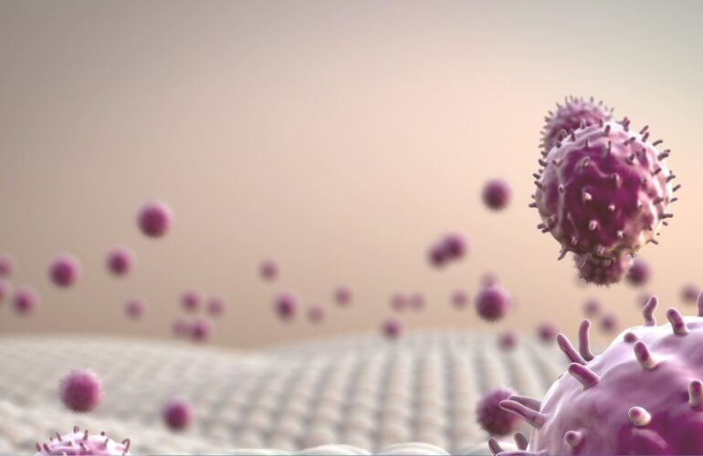
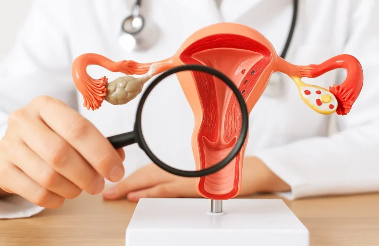

01
Tibbi biokimya
Qan və digər bioloji mayelərdə qlükoza, lipidlər, fermentlər, qaraciyər və böyrək göstəriciləri kimi biokimyəvi parametrlərin təyini.
Testlərə bax →Klinik laborator diaqnostikanın 10 istiqaməti və 4000+ test.
Qan və digər bioloji mayelərdə qlükoza, lipidlər, fermentlər, qaraciyər və böyrək göstəriciləri kimi biokimyəvi parametrlərin təyini.
Testlərə bax →
İmmun sistemin vəziyyətinin, autoimmun xəstəliklərin və infeksiyalara qarşı antitellərin müayinəsi.
Testlərə bax →
Toxuma və hüceyrə nümunələrinin histoloji və sitoloji müayinəsi ilə dəqiq diaqnoz.
Testlərə bax →Ümumi qan analizi, qan hüceyrələrinin morfologiyası və qanın laxtalanma sisteminin qiymətləndirilməsi.
Testlərə bax →Şiş markerlərinin təyini ilə onkoloji xəstəliklərin erkən aşkarlanması və müalicənin izlənməsi.
Testlərə bax →Qida, tozcuq, ev tozu və digər allergenlərə qarşı həssaslığın laborator təyini.
Testlərə bax →Qanda dərman səviyyələrinin izlənməsi və toksik maddələrin təyini ilə təhlükəsiz müalicə.
Testlərə bax →Hamiləlik dövründə ana və döl sağlamlığının, yenidoğulmuşlarda isə anadangəlmə xəstəliklərin skrininqi.
Testlərə bax →Bakterial və göbələk infeksiyalarının əkmə üsulu ilə aşkarlanması və antibiotiklərə həssaslığın təyini.
Testlərə bax →PZR və digər molekulyar üsullarla virus və bakteriyaların DNT/RNT səviyyəsində dəqiq təyini.
Testlərə bax →